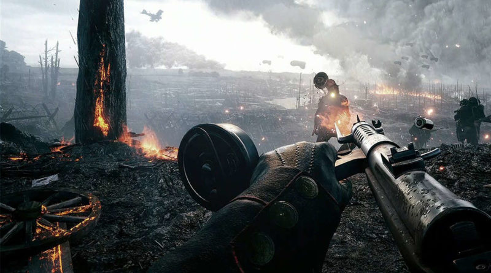
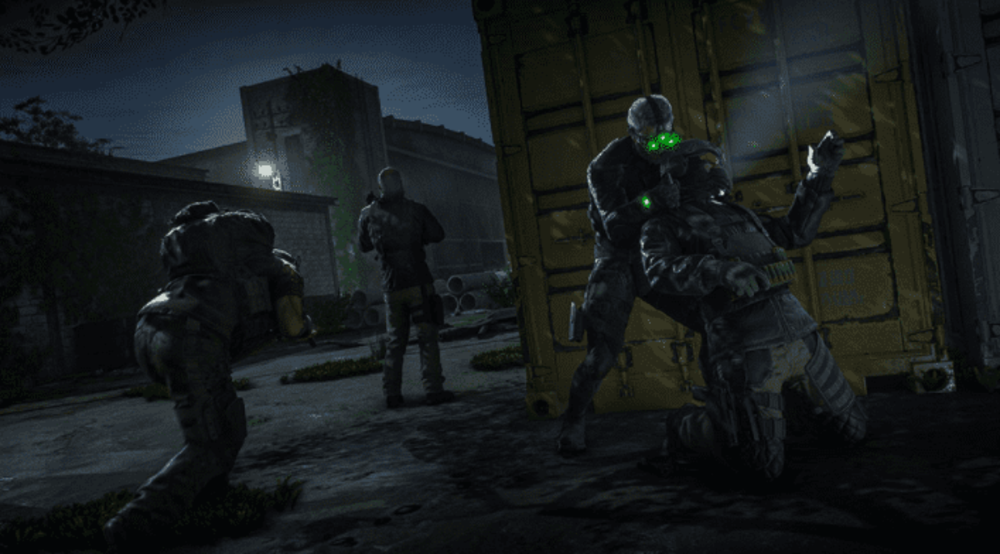
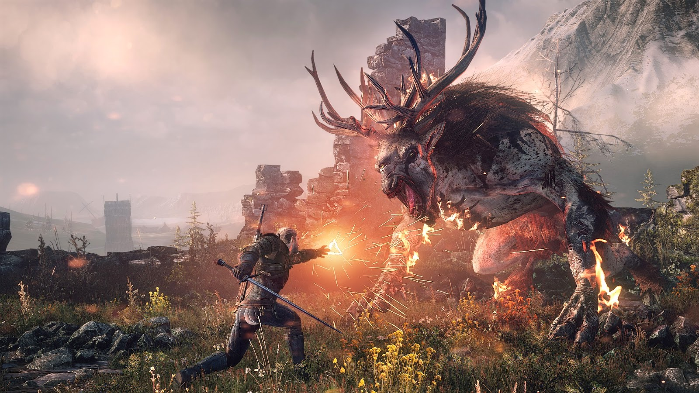
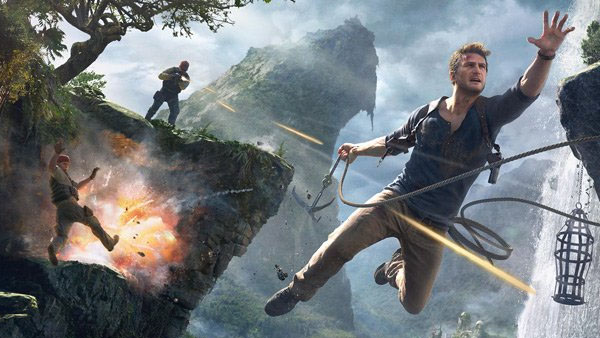
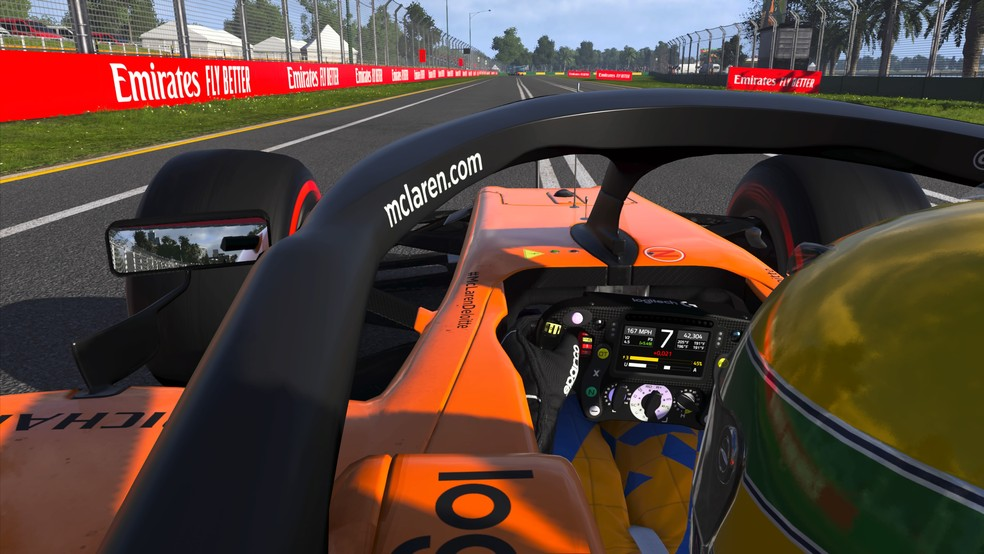
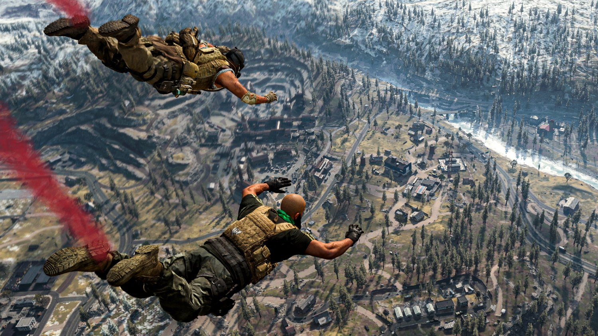
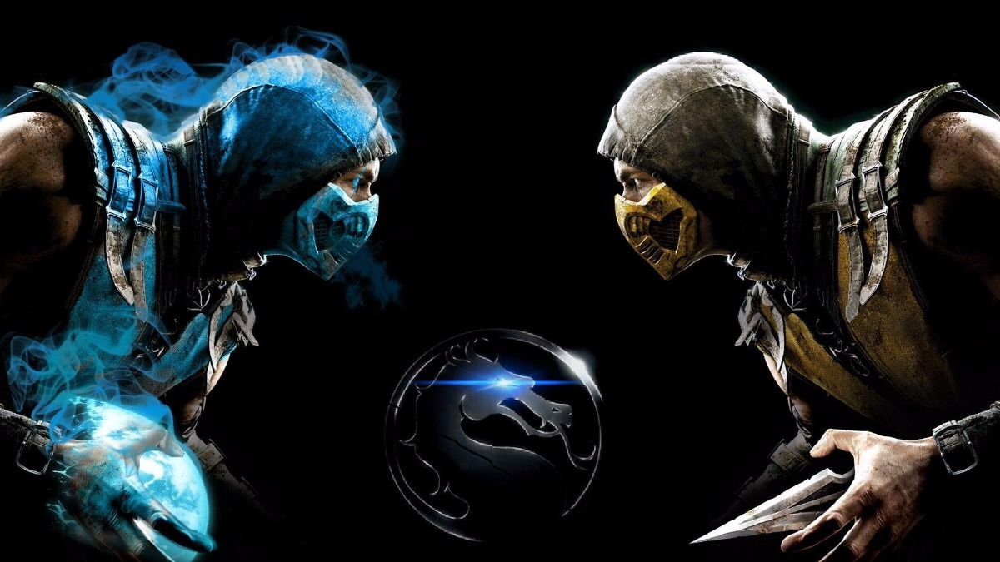
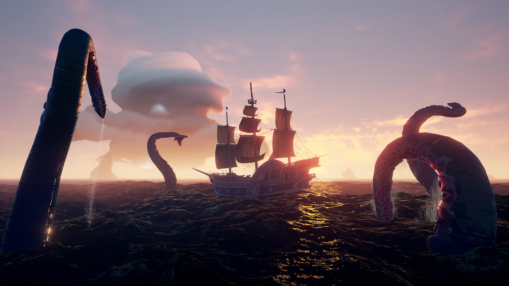

Abaixo estão os principais gêneros em que os jogos se baseiam atualmente:
Gêneros de Jogos
FPS

Battlefield 1
Os jogos do gênero FPS (ou First Person Shooter) são jogos onde as personagem comandadas
pelo jogador são atiradores em primeira pessoa, ou seja, a visão do jogador é a mesma visão
do personagem, como nas franquias famosas de Call of Duty ou Battlefield, ou em outras como, Halo, Overwatch, Destiny, etc.
TPS
Os jogos TPS são aqueles jogos de atiradores em terceira pessoa, onde o jogador vê a personagem como se houvesse um “drone” seguindo e gravando as cenas apresentadas ao controlador, isso pode ser visto na franquia Gears of War e no famoso e bastante conhecido Battle Royale, o Fortnite.

Gears of War 5
Stealth

Splinter Cell Blacklist
O gênero Stealth se baseia em fazer com que o jogador se esconda e passe despercebido pelos seus inimigos e logo em seguida ataque-os de surpresa. Este gênero pode ser visto na famosa franquia Assassin’s Creed e jogos da marca Tom Clancy's, ambos pertencentes a Ubisoft.
RPG
Os RPGs são jogos de estratégia, com grande foco em sua narrativa, onde cada escolha interfere no seu desempenho durante o jogo e na história a ser jogada, sendo muito famosos e conhecidos os títulos Skyrim, The Witcher, Dante's Inferno, que fazem parte deste gênero.

The Witcher 3
Ação

Uncharted 4
Os jogos de ação proporcionam ao jogador a experiência de viver uma aventura, desafiando ele o tempo, seja explorando o ambiente, solucionando puzzles, ou sobrevivendo a inimigos sedentos pelo seu sangue. Alguns exemplos de jogos que são desse gênero são a sequência de Uncharted, a franquia Tomb Raider e todos os Far Cry(s).
Corrida e Vôo
Os jogos de corrida e vôo são aqueles que a jogabilidade real não importa, o mais importante nesses jogos é a diversão do jogador, por isso, em grande parte são jogos de mundo aberto, como a franquia Forza Horizon, exclusiva para Xbox e Windows 10.

Forza Horizon 4
Simulação

F1® 2019
Os games de simulação, ao contrário dos jogos de corrida e vôo listados acima, focam na jogabilidade e no realismo para uma maior imersão do jogador, isso pode ser notado nas franquias Forza Motorsport, Gran Turismo e F1.
Battle Royale
Battle Royale são jogos onde as pessoas devem ser a última a sobreviver, contra outros oponentes e com uma zona segura diminuindo, como uma nuvem de gás ou tempestade. Dentre estes, podemos citar Fortnite, PUBG,Call of Duty Warzone, Free Fire, entre outros.

Call of Duty Warzone
Luta

Mortal Kombat
A dinâmica dos jogos de luta é o combate corpo-a-corpo entre dois players em um tempo de jogo dividido em rounds, para ganhar um round é necessário o jogador zerar a barra de vida de seu oponente ou terminar com mais vida do que ele, porém, para se tornar o vencedor é preciso ganhar dois rounds. Desde a época dos arcades até os dias de hoje surgiram muitos games nesse estilo como, Mortal Kombat, Street Fighter e Injustice.
Terror
O objetivo do gênero de terror não é nada mais nada menos que fazer com que o jogador jogue sempre com receio de que ele pode tomar um susto ou até mesmo morrer (no jogo!), exemplos de jogos que fizeram isso muito são, jogos da franquia Rezident Evil, Silent Hill, Outlast 1 e 2, e os FNAFs.

Five Nights at Freddy's 2
Aventura

Sea Of Thieves
Os jogos de aventura são aqueles em que o importante é a diversão e a imersão, com o foco de desbravar o mapa, lutar contra hostis e realizar missões que podem ajudar (ou piorar) a experiência no jogo. Além disso, normalmente não têm história bem definida. Alguns exemplos de jogos deste gênero são: No man's sky, Sea of Thieves e Astroneer.